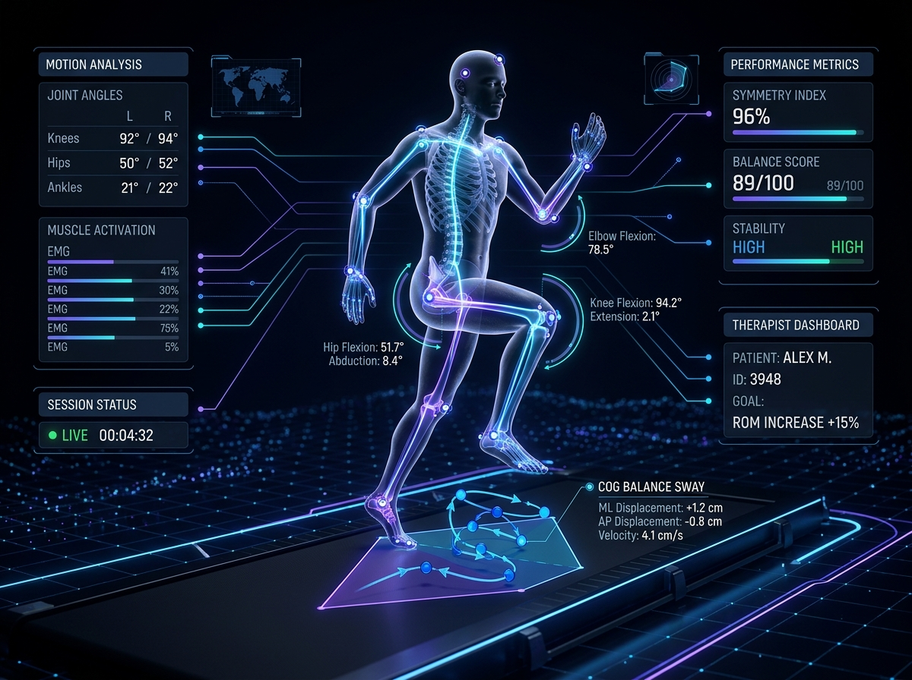

Wizyty online nowej generacji. Zaawansowana analiza ruchu i postawy ciała w czasie rzeczywistym bez dodatkowych czujników. Zero modeli językowych (LLM), 100% ochrony danych w Twoim ulubionym szyfrowanym komunikatorze.

Podczas wizyty wykorzystujemy wyspecjalizowane modele uczenia maszynowego (Machine Learning, m.in. YOLOv8), które na bieżąco analizują wyłącznie dane kinematyczne z Twojej kamery. System precyzyjnie mierzy ruchomość stawów bez przesyłania Twojego głosu czy wizerunku do zewnętrznych serwerów – nie używamy żadnych dużych modeli językowych (LLM), co gwarantuje pełne bezpieczeństwo analityczne.
Oprócz ruchu stawów, algorytm dynamicznie wyznacza Twój środek ciężkości (COG) i generuje mapę wychyleń (sway map). Daje to specjaliście natychmiastowy podgląd na stabilność Twojej postawy i ewentualne asymetrie, zachowując przy tym całkowitą anonimowość i lokalność przetwarzania danych.
Twoje dane to Twoja własność
Nasza telerehabilitacja i sesje fizjoterapii odbywają się za pośrednictwem szyfrowanych połączeń (End-to-End Encryption). Cenimy Twój komfort i czas, dlatego nie wymagamy instalowania skomplikowanego oprogramowania ani rejestracji na zewnętrznych serwerach — łączymy się przez bezpieczny komunikator wideo preferowany przez Ciebie (np. Signal, Telegram, WhatsApp, Session, FaceTime, Google Meet czy Jitsi).
Cenię prywatność moich pacjentów do tego stopnia, że w procesie rehabilitacyjnym całkowicie omijamy tradycyjny system finansowy i zbędnych pośredników. Oprócz standardowych przelewów bankowych, płatności za wizyty przyjmuję również w kryptowalutach (np. Bitcoin, Monero, USDT), co dla chętnych pozwala zachować pełną anonimowość i niezależność na każdym etapie – od komunikacji, przez terapię, aż po rozliczenie.
100 PLN | ~25 USD | ~23 EUR
Rozliczenie następuje tradycyjnie (przelew bankowy) lub opcjonalnie poprzez transfer kryptowalutowy (szczegóły i adresy portfeli podawane są podczas rezerwacji terminu).
Proste kroki do bezpiecznej konsultacji online
W razie pytań napisz do nas bezpośrednio: biokineticum@proton.me